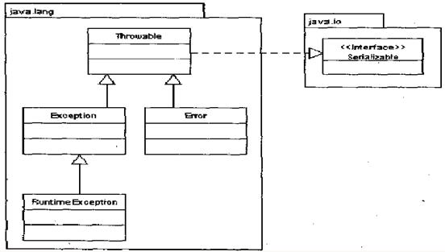
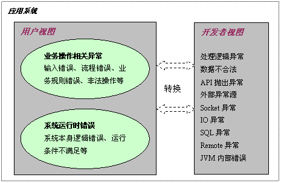

Java 异常基本概念
下图为java 异常体系结构：

在Java中，所有异常都有一个共同的祖先Throwable。
Throwable有两个重要的子类：
-
Exception(异常)，表示应用程序中可预测、可恢复的问题。 -
Error(错误),表示运行应用程序中出现较为严重的问题。大多数错误与代码作者无关，而表示JVM出现的问题，例如OutOfMemoryError。
Exception类有个重要的子类RuntimeException ，表示“JVM 常用操作”引发的错误。例如NullPointerException、ArrayIndexOutOfBoundException。
异常处理的分类
Java异常可分为：
-
可检测异常(Checked)，对于方法调用者来说属于必须处理的异常。 -
非检测异常(Unchecked)，不一定非要才去任何适当操作，有两个类定义此种类型异常：RuntimeException和Error。 -
自定义异常
多视角理解异常
如下图所示，不同用户对异常的理解是不同的

如何正确处理异常
Java异常处理的原则
- 不丢弃异常，尽可能的处理异常。代码15-18行
针对异常应该采取一些行动，如修复问题、提醒某人或者其他处理，调用printStackTrace不算处理好了异常，如果在分析异常后认为自己无法处理，可以选择重新抛出异常。
-
指定具体的异常，不要使用覆盖式异常处理块。代码15行
try{ // … } //危险的处理 catch(Exception e){ // … }
在catch语句中尽可能指定具体的异常类型，不要试图处理所有可能的异常。
- 说明异常的详细信息，记录可能影响应用运行的异常。代码3-18行
至少要采取一些永久的方式，记录下可能影响应用操作的异常。
- 充分运行finally关键字，保证释放所有资源。代码3-14行
编写finally块要多加小心，特别是要注意finally块之内抛出的异常。
- try块不易过大。代码3-14行
把大段代码放入单个try块，不利于分析程序抛出异常的原因。
- 全面考虑异常对执行流程的影响，保证输出数据的完整。代码7-11行
代码示例
错误的例子：
OutputStreamWriter out = ...
java.sql.Connection conn = ...
try { // ⑸
Statement stat = conn.createStatement();
ResultSet rs = stat.executeQuery(
"select uid, name from user");
while (rs.next())
{
out.println("ID：" + rs.getString("uid") // ⑹
"，姓名：" + rs.getString("name"));
}
conn.close(); // ⑶
out.close();
}
catch(Exception ex) // ⑵
{
ex.printStackTrace(); //⑴,⑷
}
修改后的代码：
OutputStreamWriter out = ...
java.sql.Connection conn = ...
try {
Statement stat = conn.createStatement();
ResultSet rs = stat.executeQuery(
"select uid, name from user");
while (rs.next())
{
out.println("ID：" + rs.getString("uid") + "，姓名: " + rs.getString("name"));
}
}
catch(SQLException sqlex)
{
out.println("警告：数据不完整");
throw new ApplicationException("读取数据时出现SQL错误", sqlex);
}
catch(IOException ioex)
{
throw new ApplicationException("写入数据时出现IO错误", ioex);
}
finally
{
if (conn != null) {
try {
conn.close();
}
catch(SQLException sqlex2)
{
System.err(this.getClass().getName() + ".mymethod - 不能关闭数据库连接: " + sqlex2.toString());
}
}
if (out != null) {
try {
out.close();
}
catch(IOException ioex2)
{
System.err(this.getClass().getName() + ".mymethod - 不能关闭输出文件" + ioex2.toString());
}
}
}
日期：2012-11-16、2014-10-17
参考资料：Java异常处理的陋习展播、Java 异常处理及其应用、异常以及异常处理框架探析、Java 理论与实践: 关于异常的争论、Java 异常处理的误区和经验总结